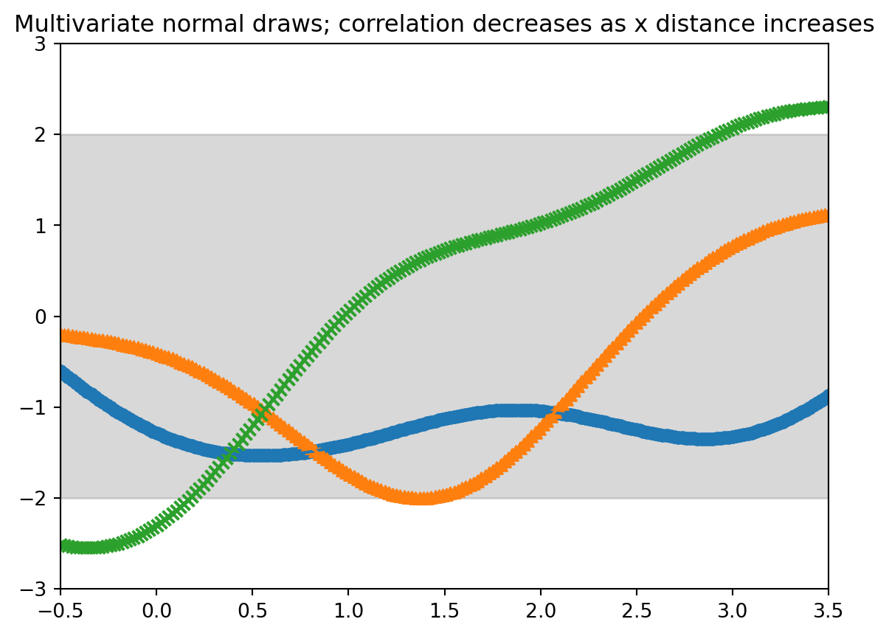
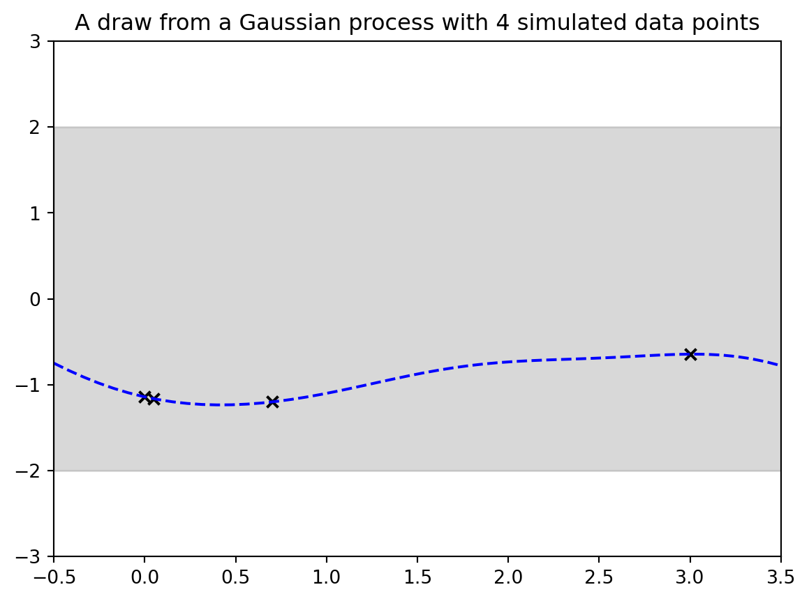
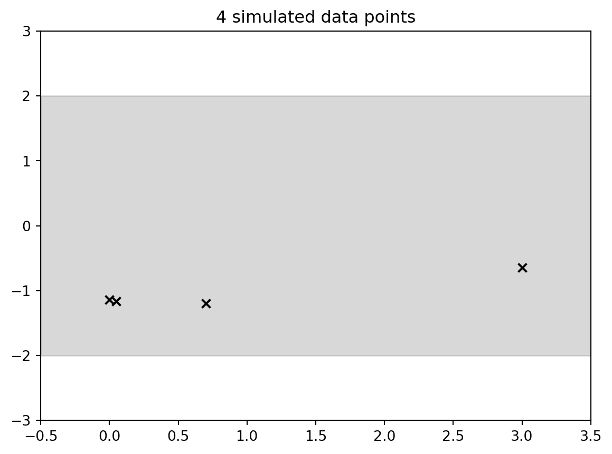
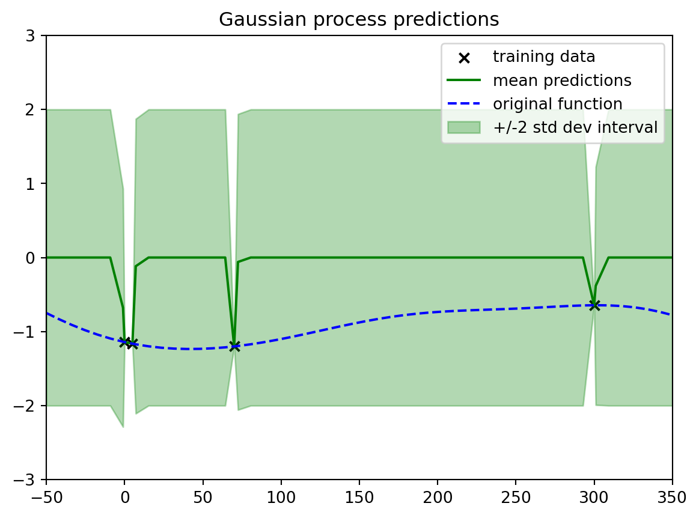

Figure 1: ocean current vector field [Ryan, Özgökmen 2023; Zewe 2023; Gonçalves et al 2019; Lodise et al 2020; Berlinghieri et al 2023]
why GP2
Figure 2: rocket booster surrogate model [Gramacy,Lee 2008] [Gramacy 2020]
Why Gaussian processes (GPs)?
Example 1:
The ocean current (velocity vector field) varies by space & time
Scientists get sparse observations of the current from buoys
Goal: estimate the current
c.f. [Ryan, Özgökmen 2023; Zewe 2023; Gonçalves et al 2019; Lodise et al 2020; Berlinghieri et al 2023]
Challenges:
Sparse & expensive data, not on a grid
Current is highly nonlinear but smooth in space-time
We want uncertainty quantification
c.f.
[Gramacy,Lee 2008]
[Gramacy 2020]
Example 2: Surrogate model
The lift force of a rocket booster varies as a function of
speed at re-entry,
angle of attack, and
sideslip angle
Scientists can run expensive simulations at chosen input settings
Goal: estimate how lift varies as a function of input settings
Example 3: learn (& optimize) performance in machine learning as a function of tuning parameters
c.f. [Snoek et al 2012; 2015; Garnett 2023]
Motif:
Sparse, noisy, costly but but smooth data.
Output may have a nonlinear relationship to the inputs.
Want uncertainty quantification.
Low-dimensional inputs.
Bonus benefits:
Ease of use (software, tuning)
Supports optimization of outcome
Predictions & uncertainties over derivatives & integrals
Module in more-complex methods
Important⚡ Overthinking parameters in Bayesian non-parametric models
Let’s talk about the elephant in the room non-parametrics do have parameters!
The classical form of a distribution based on a few fixed number parameters is replaced in these by a notion similar to a euclidean line which can be arbitrary extended. This is the nature of the non-parametric parameter vector \(\theta\).
To make the analogy more precise and what the above and many examples illustrate is that we often are interested in some behavior Y but as we get more and more data X, we will notice that there are new types of behavior that we did not observe earlier.
More Examples:
new species are being daily
new friend set appear as social networks expand
new entities appear in images as the data set expands
new wikipedia articles are discovered as we click on wikilinks
new alleles are identified as we sequence more genomes
Roadmap
A Bayesian approach
What is a Gaussian process?
Popular version using a squared exponential kernel
Gaussian process inference.
Prediction & uncertainty quantification.
Goal:
Learn the mechanism behind standard GPs to identify benefits and pitfalls
A Bayesian approach
Figure 3: posterior
Figure 4: joint
\[
\underbrace{
\mathbb{P}r(unknowns \mid data) }_{
\substack{
\text{Given the data we’ve seen} \\
\text{what do we know about } \\
\text{the underlying function?}
}
}
\propto
\underbrace{
\mathbb{P}r(data \mid unknowns)
\mathbb{P}r(unknowns)}_{
\substack{
\text{A (statistical) model} \\
\text{that can generate} \\
\text{functions and data} \\
\text{of interest}
}
}
\]
with \(\mu = [0,0]^\top\) and \(k = \sigma^2 \begin{bmatrix} 1 & \rho \\ \rho & 1\end{bmatrix}\) where \(\rho\) is the correlation between the two dimensions.
What if we let the correlation \(\rho\) depend on the input \(x\)?
Let \(\rho(x)= \rho(\mid x^{(1)} - x^{(2)} \mid)\)
Where the correlation goes to 1 as the x’s get close
And goes to 0 as the x’s get far
Next: Use a Similar setup but an M-long Gaussian instead of just a bivariate
We have M locations (need not be in order): \(X^{(m)} \in \mathbb{R}^d\)
We generate \([y^{(1)}, \ldots,y^{(m)}]^\top \sim \mathcal{N}(\boldsymbol{\mu}, \boldsymbol{K})\)
with \(\mu=0_M\) and \(K\) such that \(\mathbf{K}_{ij} = \sigma^2 \rho\mid (x^{(i)}, x^{(j)}\mid)\)
Demo 1 : Draws from a multivariate normal distribution
Listing 1
import numpy as npimport scipy as spimport matplotlib.pyplot as pltrng = np.random.RandomState()from sklearn.gaussian_process import GaussianProcessRegressorfrom sklearn.gaussian_process.kernels import RBF
signal_stddev =1.0kern = signal_stddev**2*RBF( length_scale=1.0,1 length_scale_bounds="fixed")n_samples =3gp = GaussianProcessRegressor(kernel=kern)numx=100xstart=-0.5xstop=3.5x=np.linspace(start=xstart,stop=xstop,num=numx)2twosd=2*signal_stddev*np.ones(numx)plt.fill_between(x,twosd,-twosd,color="gray",alpha=0.3)xdraw=np.array([0.0,0.05]).reshape(-1,1);y_all_draws=gp.sample_y(xdraw,random_state=rng, n_samples=n_samples);marker_collection=["o","^","x"]for i, ydraw inenumerate(y_all_draws.T): plt.scatter( xdraw,ydraw,3 marker=marker_collection[np.mod(i,n_samples)])4plt.xlim([xstart,xstop])plt.ylim((-3*signal_stddev,3*signal_stddev))pltaxes = plt.gca()plt.xlabel("x")plt.ylabel("y")output = plt.title("Multivariate normal draws; correlation decreases as x distance increases")
1
set the kernel
2
coloring 2 std dev range
3
plotting the draws
4
make the plot
Figure 6: Multivariate normal 2 draws
signal_stddev =1.0kern = signal_stddev**2*RBF( length_scale=1.0,1length_scale_bounds="fixed")gp = GaussianProcessRegressor(kernel=kern)numx=100xstart=-0.5xstop=3.5x=np.linspace( start=xstart, stop=xstop, num=numx)2twosd=2*signal_stddev*np.ones(numx)plt.fill_between(x, twosd,-twosd, color="gray", alpha=0.3)xdraw=np.array([0.0,0.05,3.0]).reshape(-1,1)y_all_draws=gp.sample_y( xdraw,random_state=rng,n_samples=3)marker_collection=["o","^","x"]for i, ydraw inenumerate(y_all_draws.T): plt.scatter( xdraw, ydraw,3 marker=marker_collection[np.mod(i,3)])plt.xlim([xstart,xstop])plt.ylim((-3*signal_stddev,3*signal_stddev))4pltaxes = plt.gca()output = plt.title("Multivariate normal draws; correlation decreases as x distance increases") # <4>plot
1
set the kernel
2
coloring 2 std dev range
3
plotting the draws
4
make the plot
Figure 7: Multivariate normal three points unevenly spaced
signal_stddev =1.0kern = signal_stddev**2*RBF(length_scale=1.0,length_scale_bounds="fixed") # set the kernelgp = GaussianProcessRegressor(kernel=kern)numx=200xstart=-0.5xstop=3.5x=np.linspace(start=xstart,stop=xstop,num=numx)twosd=2*signal_stddev*np.ones(numx) # coloring 2 std dev rangeplt.fill_between(x, twosd,-twosd,color="gray", alpha=0.3) # coloring 2 std dev rangexdraw=np.linspace( start=xstart,stop=xstop, num=numx).reshape(-1,1)y_all_draws=gp.sample_y( xdraw,random_state=rng, n_samples=3) marker_collection=["o","^","x"]for i, ydraw inenumerate(y_all_draws.T): plt.scatter(xdraw,ydraw,marker=marker_collection[np.mod(i,3)]) plt.plot(xdraw,ydraw) # plotting the drawsplt.xlim([xstart,xstop])plt.ylim((-3*signal_stddev,3*signal_stddev))pltaxes = plt.gca() # make the plotoutput = plt.title("Multivariate normal draws; correlation decreases as x distance increases") # make the plot

Figure 8: Multivariate normal 50 point evenly spaced
we just drew random functions from a type of “Gaussian process”!
Gaussian processes
Definition: “A Gaussian process is a collection of random variables, any finite number of which have a joint Gaussian distribution.” – [@rasmussen2006gaussian]
E.g. the function is a collection indexed by input \(x\): \[
f(x) \sim \mathcal{GP}(m, k)
\]
It is specified by its mean function and covariance function:
Mean function \(m(x)=E[f(x)]\)
Covariance function (a.k.a. kernel) \(k(x,x')=\mathbb{E}[(f(x) - m(x))(f(x') - m(x'))]\)
A common default (e.g. in software) is \(m(x)=0\)
One very commonly used covariance function is the squared exponential or radial basis function (RBF)
We’ll see a more general form later, but for now we’re using: \(k(x, x') = \sigma^2 \exp\left(-\frac{1}{2} \|x - x'\|^2\right)\)
For now, assume data is observed without noise
Let’s look at a draw from the Gaussian process, i.e. we are just generating synthetic data from the Gaussian process model.
Demo 2: Draw from a Gaussian process
signal_stddev =1.0;kern = signal_stddev**2*RBF( length_scale=1.0, length_scale_bounds="fixed") # set the kernelgp = GaussianProcessRegressor(kernel=kern)xobs = np.array([0.0,0.05,0.7,3.0]);Nobs = xobs.shape[0]numx=50;xstart=-0.5;xstop=3.5; x=np.linspace( start=xstart,stop=xstop,num=numx);twosd=2*signal_stddev*np.ones(numx) # coloring 2 std dev rangeplt.fill_between( x, twosd,-twosd, color="gray", alpha=0.3) # coloring 2 std dev rangexcurve=np.linspace(start=xstart,stop=xstop,num=numx);xall = np.concatenate((xcurve,xobs)).reshape(-1,1)yall = gp.sample_y(xall,random_state=rng,n_samples=1);ycurve=yall[0:numx];yobs=yall[numx:numx+Nobs]plt.plot(xcurve,ycurve,linestyle="dashed",color="blue");plt.scatter(xobs,yobs,color="black",marker="x")plt.xlim([xstart,xstop]);plt.ylim((-3*signal_stddev,3*signal_stddev));pltaxes = plt.gca() # make the plotoutput = plt.title("A draw from a Gaussian process with "+str(Nobs) +" simulated data points") # make the plot

Figure 9
# just the training dataplt.fill_between(x,twosd,-twosd,color="gray",alpha=0.3) # coloring 2 std dev rangeplt.scatter(xobs,yobs,color="black",marker="x")plt.xlim([xstart,xstop]); plt.ylim((-3*signal_stddev,3*signal_stddev)); pltaxes = plt.gca() # make the plotoutput = plt.title(str(Nobs) +" simulated data points") # make the plot

Figure 10: A draw from a Gaussian process with 4 simulated data points
Note on “dimension” of the input
Figure 11
Figure 12
Let’s be careful to separate two types of “dimension”
We’re using a superscript \(y^{(1)}\) to denote (M or N) number of points in the space
We’ll use a subscript for the (D) different elements of a point’s vector
Note: all of our real-life examples from the start had number of inputs D > 1
D = 1 is much easier to visualize, but might not be representative.
Inference about Unknowns given data.
Let \(X\) collect the N “training” data points (indexed 1 to N)
Let \(X'\) collect the M “test” data points \(X: N\times D\)
Where we want to evaluate the function
Indexed N+1:N+M
\(K(X,X')\) os the \(N \times M\) matrix with (n,m) entry \(k(x^{(n)}, x^{(N+m)})\)
Then by our model (dimension are annotated in blue) \[
\begin{bmatrix}
\overbrace{f(X)}^{\color{blue}N\times 1} \\
\underbrace{f(X')}_{\color{blue}M\times 1}
\end{bmatrix}
\sim \mathcal{N}
\left(
\underbrace{
\begin{bmatrix}
0_N \\
0_M
\end{bmatrix}}_{\color{blue}(N+M)\times 1 } ,
\underbrace{
\begin{bmatrix}
K(X, X) & K(X, X') \\
K(X', X) & K(X', X')
\end{bmatrix}}_{
\color{blue}(N+M)\times (N+M)
}
\right)
\]
The conditional satisfies \(f(X')\mid f(X), X, X' \sim \mathcal{N}\)
Can compute mean (\(\color{blue}M\times 1\)) & covariance (\(\color{blue}M\times M\)) in closed form with Gaussian facts
Now we can flip this around using the Bayesian machinery and use that to get information. When we don’t know the function, but we do know the data, which is real life. In real life You know the data, but you don’t know the function and you’re trying to learn that direction.
If we want to draw a curve we need M to be very large. And we will need to generate a \(M \times D\) matrix of points.
So now what we’re going to do is we’re going to run Gaussian process regression on those points. And what do I mean by, say, running Gaussian process regression I’m literally talking about exactly what we just did on the slide together.
We’re saying hey jointly You can think of the joint distribution of the value of the value of the Gaussian process at all of these different X locations, all of these different horizontal locations.
What we would have is we would have everything else. In this plot we’d have The black X’s, that’s our observed data. So we totally know that.
We have:
Our observed data, the black X’s, which is our training data.
Our predictions. that is the solid green line it is the mean of the Gaussian process at all of these different X locations away from the observations. We are creating it just like we created our draws or like we created our, our big prior Gaussian process before.
We’re saying, hey, what’s the mean? In this case, it’s non-trivial. It’s not just zero because it’s conditioned on the data.
We have our uncertainties, our plus or minus two standard deviation interval.
Now, before, this was pretty boring. When we were first generating things a priori when we didn’t have any data. The plus or minus two standard deviation interval is just plus or minus two everywhere. Now, because we’ve observed some data, it’s not trivial. We’re actually seeing that it differs depending on where we are in the space.
And I just want to point out some things that might be considered useful about this.
When I’m really near my data points
we see there’s very little uncertainty.
very little uncertainty going between them. Because this is basically the only way we can smoothly and quickly go between these two points.
when we get much farther away we have a lot of uncertainty because there’s a good number of different ways that we could have gotten between these two points. It makes sense that our uncertainty would be larger As we get farther away.
1gpfit = GaussianProcessRegressor(kernel=kern, optimizer=None)gpfit.fit(xobs.reshape(-1,1),yobs.reshape(-1,1))mean_pred, stddev_pred = gpfit.predict(xcurve.reshape(-1,1), return_std=True)y_all_draws=gpfit.sample_y(xcurve.reshape(-1,1),random_state=rng,n_samples=3)color_options=["red","blue","orange"]plt.scatter(xobs,yobs,color="black",marker="x", label="training data")for i, ydraw inenumerate(y_all_draws.T): plt.plot(xcurve,ydraw,label="random draw",color=color_options[np.mod(i,3)])plt.fill_between( xcurve,mean_pred-2*stddev_pred,mean_pred+2*stddev_pred, color="green",alpha=0.3,label=r"+/-2 std dev interval")plt.legend();plt.xlim([xstart,xstop]);plt.ylim((-3*signal_stddev,3*signal_stddev));plotout = plt.title("Random draws of f from the predictive distribution")
1
NOT fitting kernel hyperparameters
Figure 14: Gaussian process predictions with noise
Now we have these four data points. And so we’ve constrained our random draws of the functions to go through the four data points.
And here are just three draws from it. Because again, it’s just a multivariate Gaussian is all that we’re doing here. We’re just making this multivariate Gaussian the same way we did before by having draws at many dense x values at many dense input values. And so we can do the same thing here. It’s just a different multivariate Gaussian.
This is meant to express Our uncertainty and our best guess, our best guess could be seen as this mean This posterior mean. So these are the mean predictions this solid green line. So that could be thought of as our best guess. And then our uncertainty around that
Is the plus or minus two standard deviation interval conditional on the data that we’ve seen. And now we’re going to dig a little bit more. Into some choices we’ve made and what are their implications.
Squared exponential kernel revisited
What if we happened to measure our data on a different scale?
# observed y values are 100 times what they were in the nice examplegpfit = GaussianProcessRegressor(1 kernel=kern, optimizer=None)gpfit.fit(xobs.reshape(-1,1),100*yobs.reshape(-1,1))mean_pred, stddev_pred = gpfit.predict( xcurve.reshape(-1,1), return_std=True)plt.scatter(xobs,100*yobs,color="black",marker="x", label="training data")plt.plot(xcurve,100*ycurve,linestyle="dashed",color="blue", label="original function")plt.plot(xcurve,mean_pred,color="green", label="mean predictions")plt.fill_between( xcurve, mean_pred-2*stddev_pred,mean_pred+2*stddev_pred, color="green",alpha=0.3, label=r"+/-2 std dev interval")plt.legend();plt.xlim([xstart,xstop]);plt.ylim( (-100*3*signal_stddev, 100*3*signal_stddev));plotout = plt.title("Gaussian process predictions")
1
NOT fitting kernel hyperparameters
Figure 15: issues when we scale the y values by 100
In this sample the \(+/-2 \sigma\) confidence interval is now 100 times smaller than in the nice example, and the mean prediction is also 100 times smaller than in the nice example. So while it is still there it seems to have vanished.
# observed x values are 100 times what they were in the nice examplegpfit = GaussianProcessRegressor( kernel=kern, optimizer=None) # NOT fitting kernel hyperparametersgpfit.fit(100*xobs.reshape(-1,1),yobs.reshape(-1,1))xall=np.sort(np.concatenate((xcurve,xobs)))mean_pred, stddev_pred = gpfit.predict(100*xall.reshape(-1,1), return_std=True)plt.scatter(100*xobs, yobs,color="black",marker="x", label="training data")plt.plot(100*xall,mean_pred, color="green", label="mean predictions")plt.plot(100*xcurve,ycurve, linestyle="dashed", color="blue", label="original function")plt.fill_between(100*xall,mean_pred-2*stddev_pred, mean_pred+2*stddev_pred,color="green", alpha=0.3,label=r"+/-2 std dev interval")plt.legend();plt.xlim([100*xstart,100*xstop]);plt.ylim((-3*signal_stddev,3*signal_stddev));plotout = plt.title("Gaussian process predictions")

Figure 16: Issue when we scale the x values by 100
in this example the points are now so far apart that at most point on the graph we are quickly jumping to the prior and getting the maximum uncertainty.
Listing 2
print(np.exp(-0.5*2.0**2))
0.13533528323661267
What can we do to handle different x and f(x) scales?
Normalization in y can help; in x, can still be hiccups
A common option in practice and in software is to fit the hyperparameters of a more general squared exponential kernel from data
Parameters (here, f) parametrize the distribution of the data. If we knew them, we could generate the data.
GPs: nonparametric model: infinite # of latent params
Hyperparameters parametrize the distribution of the parameters. If known, we could generate the parameters.
Algorithm:
Fit a value for the hyperparameters using the data.
Given those values, now compute and report the mean and uncertainty intervals
Demo 3 – Learning the signal and the length scale and
signal_stddev =2.0;kern = signal_stddev**2*RBF( length_scale=0.3, length_scale_bounds="fixed") # set the kernelgp = GaussianProcessRegressor(kernel=kern)xstart=-0.5;xstop=3.5;Nobs =10;xobs = rng.uniform(xstart,xstop,size=Nobs)numx=200;x=np.linspace(start=xstart,stop=xstop,num=numx);twosd=2*signal_stddev*np.ones(numx) # coloring 2 std dev rangeplt.fill_between(x,twosd,-twosd,color="gray",alpha=0.3) # coloring 2 std dev rangexcurve=np.linspace(start=xstart,stop=xstop,num=numx);xall = np.concatenate((xcurve,xobs)).reshape(-1,1)yall = gp.sample_y(xall,random_state=rng,n_samples=1);ycurve=yall[0:numx];yobs=yall[numx:numx+Nobs]plt.plot(xcurve,ycurve,linestyle="dashed",color="blue");plt.scatter(xobs,yobs,color="black",marker="x")plt.xlim([xstart,xstop]);plt.ylim((-3*signal_stddev,3*signal_stddev));pltaxes = plt.gca() # make the plotoutput = plt.title("A draw from a Gaussian process with "+str(Nobs) +" simulated data points") # make the plot
Figure 17: A draw from a Gaussian process with 10 simulated data points
we have drawn 10 points and the ground truth
but what goes to the algorithm is just the data points as follows:
# just the training dataplt.scatter(xobs,yobs,color="black",marker="x")plt.xlim([xstart,xstop]); plt.ylim((-3*signal_stddev,3*signal_stddev)); pltaxes = plt.gca() # make the plotoutput = plt.title(str(Nobs) +" simulated data points") # make the plot
It’s worth being aware that data science (ML/stats/AI) often overloads common colloquial terms with terms of art
E.g. “significance”, “bias”, “generalization”
Every precise use of “uncertainty” has this issue
E.g. frequentist sampling, Bayesian, etc.
We should always make sure we can distinguish what is, and what is not, covered by the term of art
A standard setup (our setup so far):
We model the data as generated according to a GP with squared exponential kernel and observation noise
We fit the hyperparameters (the signal variance, the length scale(s), and the noise variance) to single values
The reported uncertainties are what result when the GP model and fitted hyperparameters are exactly correct
Are there other uncertainties that aren’t being quantified here?
Some other sources of uncertainty
There may be multiple sets of substantively different hyperparameter values that are both plausible and consistent with the observed data
What can we do? First: unit test, plot, sense check!
Ask what is possible to learn with the data available
Multiple random restarts: plot the results
Bayesian model of the hyperparameters
A GP with your mean & kernel may be meaningfully misspecified for the data
Box: “All models are wrong, but some are useful”
What can we do? First: unit test, plot, sense check!
Can change the mean and/or kernel
E.g. local/heteroskedastic models, periodic kernels, linear mean function, many many more
Extrapolation
Extrapolation: Estimation/prediction beyond the observed data • Compare to interpolation: estimation/prediction within the observed data • When using GPs with a squared exponential kernel: • Data points that are more than a handful of length scales from other data points will revert to prior behavior • Note: extrapolation isn’t a special issue unique to GPs. It’s a fundamentally hard problem for all data analysis methods • To extrapolate, you need to make assumptions • When you have domain knowledge of a system, you might be able to use it to extrapolate • When you’re letting a machine learning method use its defaults, it’s making assumptions. Do you know what those assumptions are?
More than one input
Figure 20: histogram of squared inter-point distances
Our illustrations have almost all been for one input so far
But in real life, it’s typical to have more than one input
What could go wrong? Previous lessons apply, but also:
Possibly different length scales. Check defaults.
Regression in high dimensions is a fundamentally hard problem (without additional assumptions)
All points are “far away” in high dimensions. Illustration:
Uniformly randomly sample 10,000 points on \([0,1]^D\)
Make a histogram of squared inter-point distances
Recall: points “far” from data default to the prior mean and variance.
Some high points of what got cut for time
We ran out of time! Here are some high-level summary points beyond what we discussed together:
There are other challenges with many inputs, both conceptual and practical
Running time for GP regression can be an issue with a large number of training data points
In particular, the matrix inverse can be expensive
There are incredibly many papers about fast approximations to the exact Gaussian process
Each approximation has pros and cons
Bayesian optimization inherits many of the pros and cons of Gaussian processes for regression
Exercise: once you learn about Bayesian optimization, think about how the pros and cons we discussed together might translate there
Footnotes
This is key as in real life there are many sources of uncertainty and in our models we only get to quantify one!↩︎